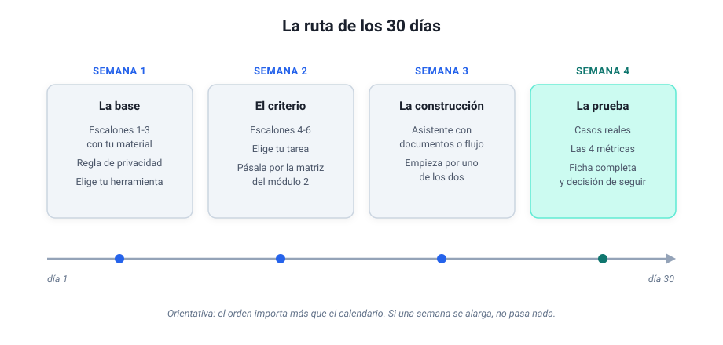

Módulo 8 - Tu caso de uso¶
Diseñar, documentar y ejecutar tu propio proyecto¶
Este es el módulo de cierre, y es puro trabajo de mesa: una ruta de 30 días para pasar del papel a la práctica y una ficha para que diseñes tu propio caso de uso de principio a fin (con lo necesario para ponerlo en marcha tú mismo o entregarlo a un equipo técnico).
Tu ruta de 30 días¶
Esta ruta es el recorrido del curso convertido en calendario, para quien prefiere avanzar con hitos a la vista. Cada semana termina con algo comprobable, y la regla de oro es no saltarse el orden: las dos primeras semanas no usan más herramienta que el chat, y son las que hacen fáciles las dos últimas. Si llegas aquí desde Antes de empezar, quédate de momento con la ruta; el resto del módulo te espera en la semana 2, cuando elijas tu tarea.

- Semana 1, la base. Los tres ejercicios de "Antes de empezar" sobre material tuyo, la regla de privacidad en tres preguntas y la elección de herramienta (en muchas empresas ya está hecha: Copilot). Hito: una tarea real resuelta con una instrucción estructurada e iterada.
- Semana 2, el criterio. Los escalones 4 a 6 (encadenar, adjuntar, formatos) y la elección de tu tarea candidata, pasada por la matriz del módulo 2. Apunta ya su línea de base en la ficha de más abajo: cuánto tardas hoy y cada cuánto la haces. Hito: la tarea elegida, dibujada en tres cajas y con veredicto de "merece la pena".
- Semana 3, la construcción. El asistente con documentos del módulo 3 o el primer flujo del módulo 2, uno de los dos; ambos a la vez es la receta clásica del abandono. Si es un asistente, deja antes sus documentos en una sola versión válida, como propone el módulo 4. Hito: funciona una vez de principio a fin.
- Semana 4, la prueba. Casos reales, las cuatro métricas del módulo 7, la prueba de cinco preguntas del módulo 3 si es un asistente, y la ficha completa. Hito: la decisión de seguir, ajustar o parar, tomada con datos y con lo que apuntaste al principio en «sigo o lo dejo».
Tu ficha de caso de uso¶
La ficha reúne en una página lo que hace falta para poner en marcha tu caso de uso o entregárselo a quien vaya a montarlo. No hace falta que salga perfecta al primer intento: es un documento vivo que irás refinando.
Hay tres líneas que conviene rellenar antes de construir nada. La línea de base es cuánto tardas hoy en la tarea y cada cuánto la haces: si no la apuntas ahora, al final no tendrás con qué comparar. Qué no hace nunca sin ti marca la frontera que la herramienta no cruza aunque pudiera (en mi sistema, ningún correo sale sin que yo lo envíe). Y sigo o lo dejo es lo que tendría que pasar durante la prueba para que sigas usándolo, y lo que te haría abandonarlo; apúntalo al principio, cuando todavía no le has cogido cariño al invento.
En la primera pestaña tienes la ficha de mi resumen de boletines del módulo 2, ya rellenada; en la segunda, la plantilla en blanco, que copias con el botón del recuadro y pegas en un documento tuyo.
- Nombre: resumen matutino de boletines.
- Propósito: leer cada mañana varios boletines y alertas de noticias, descartar el ruido y quedarme con lo relevante para infraestructuras.
- Destinatario: yo, antes de desayunar.
- Línea de base: unos 20-30 minutos cada mañana, todos los días, leyendo los boletines a mano.
- Patrón de IA: clasificar (lo relevante frente al ruido) y resumir.
- Entrada: los correos de las últimas 24 horas de una cuenta personal donde solo entran boletines públicos.
- Qué hace la IA: un paso previo quita firmas, avisos legales y cabeceras repetidas; después ChatGPT recibe un prompt fijo: quedarse con lo relevante para infraestructuras, ordenarlo, resumirlo en una lista breve y decir si no hay nada que destacar.
- Salida: un correo a mi dirección con la lista.
- Restricciones: solo material público; ni correo de trabajo ni nada de clientes.
- Qué no hace nunca sin ti: escribir a otra persona o leer otra cuenta que la de los boletines.
- Nivel de delegación: ejecuta sola, porque solo lee material público y la única persona a la que escribe soy yo; con correo de clientes de por medio se quedaría en proponer, como el triaje de correo del módulo 6.
- Herramientas y accesos: Latenode, una credencial del proveedor de IA y la autorización para que la plataforma lea esa cuenta de correo.
- Coste al mes: menos de 50 céntimos de modelo; en plan gratuito de la plataforma, ese es todo el coste.
- Hábito: corre solo cada mañana y lo reviso al leerlo; si falla del todo, lo noto enseguida, porque esa mañana no hay resumen. De mantenimiento, un vistazo de vez en cuando: la plataforma ya ha marcado un par de bloques como obsoletos, y el flujo sigue funcionando.
- Responsable: yo.
- Métricas: uso, una ejecución al día; ahorro, la línea de base menos los minutos que tardo en leer el resumen; calidad, si el resumen me basta o tengo que abrir los boletines; errores, las mañanas sin resumen o con el formato roto.
- Sigo o lo dejo: sigo si me ahorra tiempo cada mañana y no se me escapa nada importante; lo dejo si empiezo a enterarme por otro lado de noticias que el resumen no traía.
FICHA DE CASO DE USO
Nombre:
Propósito (qué problema resuelve, en una frase):
Destinatario (quién usa el resultado):
Línea de base (cuánto tardas hoy y cada cuánto lo haces):
Patrón de IA (resumir, clasificar, extraer, conversar):
Entrada (de dónde vienen los datos, en qué formato, cada cuánto):
Qué hace la IA (con qué herramienta: tu chat, Copilot, un asistente
con documentos o un flujo; y el prompt completo, con rol, formato,
idioma y qué hacer si falta información):
Salida (dónde se entrega y en qué formato):
Restricciones (qué datos no pueden pasar por la IA; quién puede
ver el resultado):
Qué no hace nunca sin ti:
Nivel de delegación (solo lee / propone y tú decides / ejecuta
pidiendo confirmación / ejecuta sola):
Herramientas y accesos (plataforma, plan, cuentas, credenciales):
Coste al mes (suscripción y uso) frente a horas ahorradas al mes:
Hábito (cuándo corre, quién revisa, cuánto mantenimiento asumes,
cómo te enteras si falla):
Responsable (quien vigila que siga sirviendo):
Métricas (uso, ahorro, calidad, errores aceptables):
Sigo o lo dejo (cuánto dura la prueba; sigo si...;
lo dejo si...):
Para rellenar cada línea tienes el curso a mano: los precios, en el cuadro de versiones y precios del módulo 1; los niveles de delegación, las cuatro métricas y el mantenimiento, en el módulo 7.
La ficha para informática¶
Si lo que montaste tiene que pasar al equipo técnico, tu ficha ya contiene casi todo lo que van a necesitar, y la IA puede pasarla al formato que te pidan:
Esta es la ficha de un caso de uso que quiero pasar al equipo de
informática. Conviértela en una ficha técnica de una página con
estos apartados: objetivo, cómo funciona hoy, qué datos maneja,
qué cuentas y credenciales usa, quién lo mantiene, qué pasa si
falla y qué necesito de ellos. Si un dato no está en la ficha,
márcalo como pendiente en vez de suponerlo.
[pega aquí tu ficha]
Si informática tiene su propia plantilla, pégala también y pide que la rellene con lo que dice tu ficha. Llegues con el formato que llegues, estas son las cuatro preguntas que te harán primero, y conviene llevarlas contestadas:
- ¿Qué datos toca? De dónde salen, si hay datos personales o de clientes y por dónde viajan (las tres preguntas del módulo 1, dichas en su idioma).
- ¿Con qué cuentas funciona? Si corre con tu cuenta personal o con una de equipo, y dónde se guardan las credenciales.
- ¿Quién lo mantiene? Quién revisa que siga sirviendo y quién lo arregla cuando algo cambia por fuera.
- ¿Qué pasa cuando falla? Quién se entera, cómo, y qué se hace mientras tanto.
Cuándo pasárselo y con qué frase, en el módulo 7.
Lleva un registro de tu propio avance¶
Una última idea, quizá la más fácil de pasar por alto. Lleva un registro de lo que vas construyendo y aprendiendo: qué probaste, qué funcionó, qué te atascó. No hace falta nada sofisticado: un archivo de texto basta, y la ficha de este módulo puede ser su primera página.
El salto de "uso ChatGPT" a "tengo un sistema que trabaja conmigo" se ve con meses de distancia, y para eso hacen falta las notas. Yo no me di cuenta de cuánto había avanzado hasta que un día leí mis propias notas de unos meses antes y no reconocí al que las había escrito.
Para profundizar
- The GenAI Divide: State of AI in Business 2025: MIT NANDA (copia en PDF; la dirección original ya no sirve): por qué el 95% de los pilotos de IA generativa en empresas no mostraba retorno medible.
- AI Index Report: Stanford HAI: los datos anuales de referencia sobre la evolución de la IA en el mundo.
- What We Learned from a Year of Building with LLMs: O'Reilly: lecciones de seis profesionales sobre lo que funciona y lo que no en producción.
- Ethan Mollick: One Useful Thing: el blog más accesible y actualizado sobre el impacto real de la IA en el trabajo.
Cuéntame cómo te ha ido¶
Si has llegado hasta aquí, tu experiencia es el dato que más me interesa: el curso mejora con lo que cuentan quienes lo han recorrido, y cada edición recoge esos arreglos en la página de novedades. Son tres preguntas y una respuesta de cinco minutos por correo:
- ¿Qué montaste (o intentaste montar)?
- ¿Dónde te atascaste?
- ¿Qué te faltó en el curso?
Escríbeme la respuesta (el enlace lleva las preguntas ya puestas). Leo todo lo que llega.
Y si quieres enterarte de las actualizaciones, escríbeme y te sumo a la lista de avisos. Si tu programa de correo no abre estos enlaces, escríbeme directamente a jose@cordovilla.email.
Cierre del curso¶
Si has hecho los ejercicios, sabes ya pedirle trabajo a la IA y revisar lo que devuelve, sabes qué material puede pasar por ella, por qué herramienta y con qué permisos, y tienes una ficha de tu propio caso que puedes enseñar a tu jefe o entregar a informática tal cual. Para seguir al día cuando el curso se acabe no hace falta leerlo todo: con los cinco recursos del principio de la página de recursos y la página de novedades tienes de sobra.
Cierre
El resto es ponerse: si eliges una tarea que te duela, la montas y la mejoras semana a semana, tendrás entre manos lo mismo que tuve yo al principio. Así empezó Paco, el sistema con el que hoy trabajo cada día, y así empieza todo lo que en este curso te he contado.